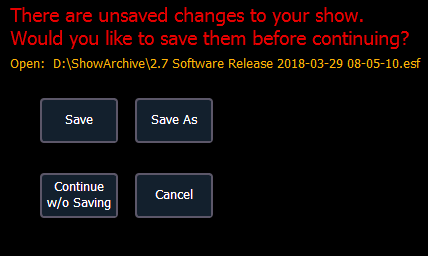

Save Show File Warning
If there is unsaved data in the current show file, a save warning will display when you attempt to open a new or existing show file.

The following options will be available:
- Save - saves the current show file, and opens a new or existing show file.
- Save as - saves the current show file to a different location or with a different name, and opens a new or existing show file.
- Continue without Saving - opens the new or existing show file without saving any changes to the current show file. Changes will be lost.
- Cancel - returns to the current show file without saving changes or opening a different file.